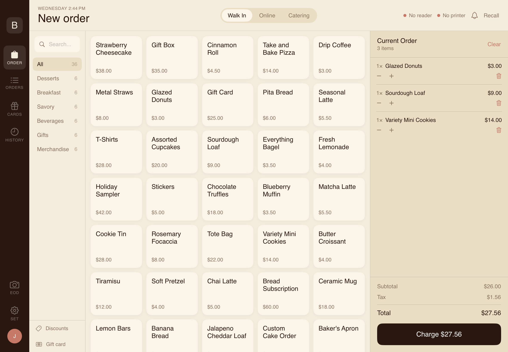
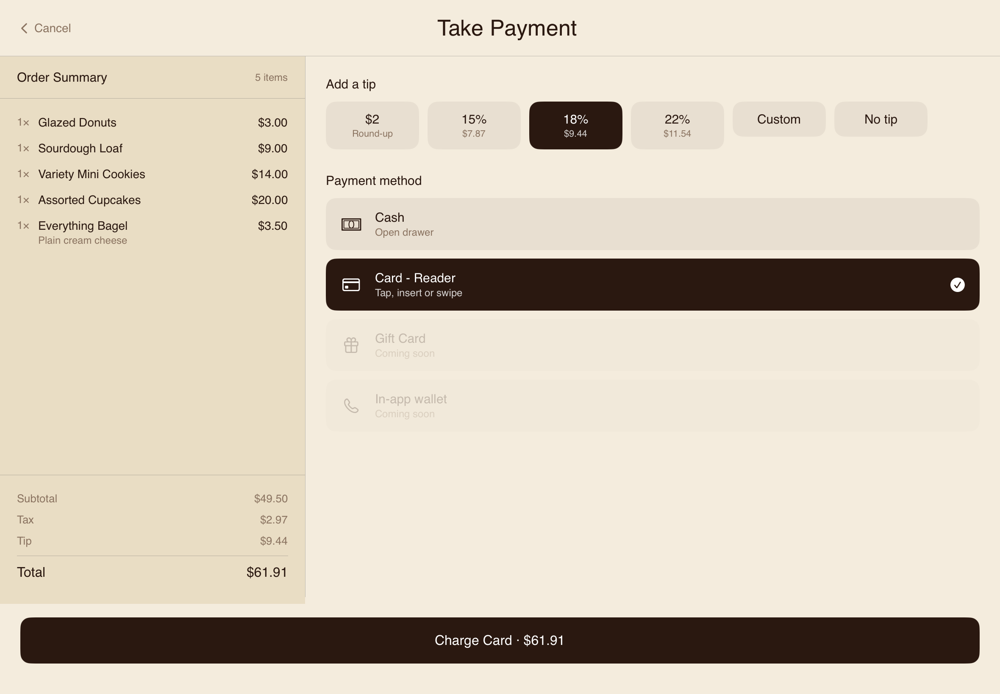

iOS POS
CH Studios · Knot Platform · iPad
Overview
The Knot iOS POS is a native iPad point-of-sale built on Stripe Terminal — the hardware card reader SDK that ships physical readers for in-person payments. An in-person sale is just another row in the same orders table that web orders, subscriptions, and iOS app orders write to. The moment a card is charged at the counter, the transaction appears in the admin dashboard queue, deducts from inventory, and contributes to the day's revenue report — no separate system, no manual reconciliation.
The Problem
Most POS systems are standalone products — Toast, Square, Clover — each with their own backend, their own monthly fee, and no connection to a business's online ordering or inventory. A sale at the counter doesn't automatically update the inventory that the website is selling from. The Knot POS eliminates that split by treating in-person payments as one more surface on the same backend.
Screenshots



How It Works
Stripe Terminal
Physical card reader integration via the Stripe Terminal iOS SDK. Supports tap, chip, and swipe. The payment intent is created server-side and captured on the reader — the same Stripe flow as the web checkout, just hardware-accelerated.
One Orders Table
An in-person sale writes to the same orders table as a web order or iOS app order. The admin dashboard shows all channels in a unified queue — no separate report for in-person vs online.
Live Inventory Deduction
Every POS sale deducts from the same inventory the customer website sells from. A sold-out item at the counter goes sold-out online in the same transaction.
Multi-Tenant
Every order is scoped to a tenant_id. The same iPad app binary serves every Knot Platform deployment — a new business gets their own POS without a separate build or codebase.
Outcome
- Replaces Toast and Square POS — no monthly hardware fee, no per-transaction platform cut on top of Stripe's standard rate.
- Unified reporting — in-person and online revenue appear together in the admin dashboard. One number, one source of truth.
- Inventory stays in sync — what the counter sells and what the website sells come off the same stock.
- TestFlight-ready — currently in TestFlight across active Knot Platform deployments, targeting App Store.